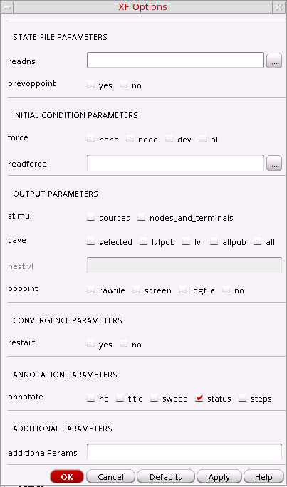
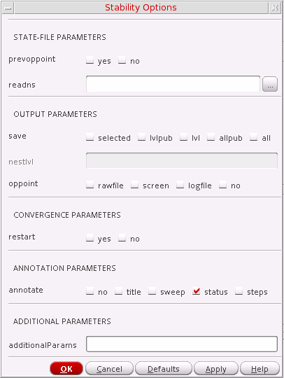
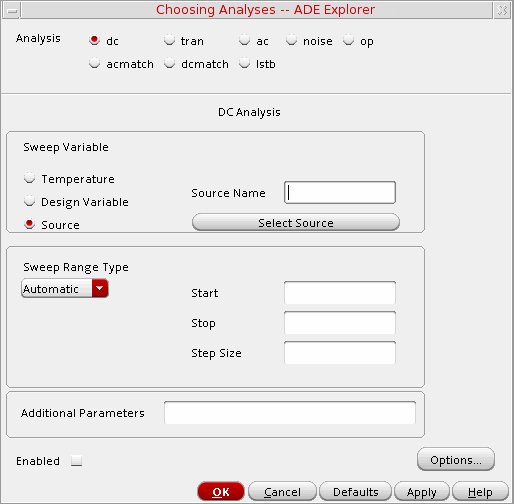
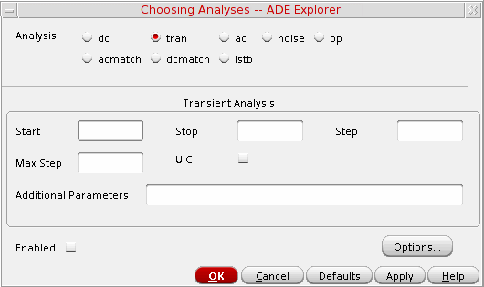
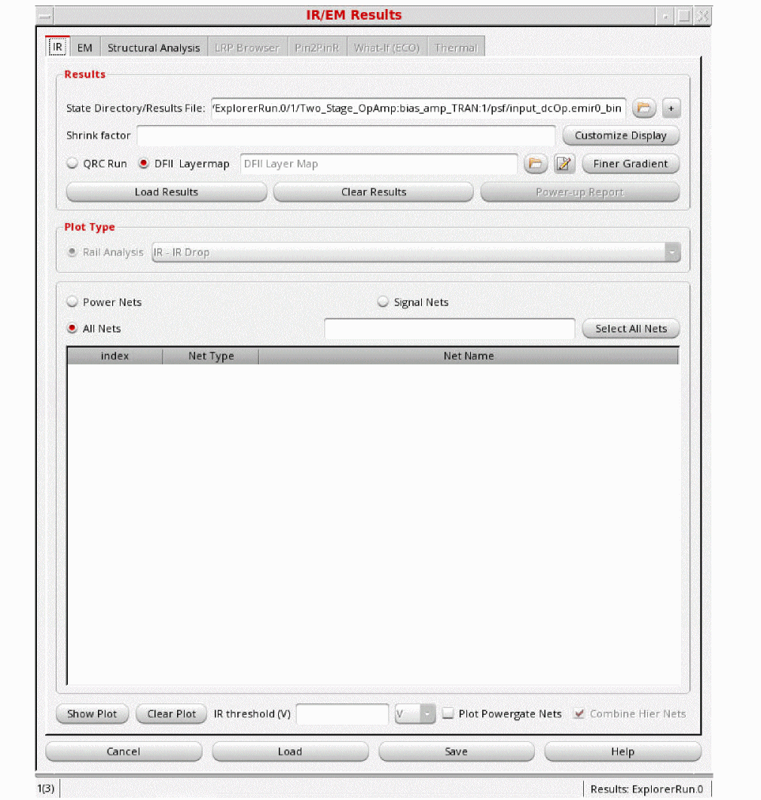

3
Setting Up Analyses
This chapter demonstrates how to set up in order to run an analysis.
- Setting Up Analyses
- Specifying Order for Analyses
- Setting Up a Spectre Analysis
- Setting Up an Analysis for UltraSim
- Setting Up an Analysis for AMS
- Setting Up an Analysis for HSPICE
- Setting Up EM/IR Analysis
Setting Up Analyses
Perform one of the following steps to set up an analysis:
- Choose Analyses – Choose.
- Click the Click to add analysis text in the Analysis section of the Setup assistant.
-
Click the Choose Analysis button
.
The Choosing Analyses form for the specified simulator appears.
In this form, perform the following steps:- Select an analysis.
- The Choosing Analyses form is updated to show the parameters for the selected analysis.
- Set the analysis options.
- Select the Enabled check box to enable the analysis.
-
Click Apply.
The selected analyses get displayed in the Setup assistant of the ADE Explorer window.
For more information about how to load the existing analyses using the Loading State form, see Setting up MDL Mode.
Disabling an Analysis
Perform the following steps to temporarily disable an analysis without deleting it:
Deleting an Analysis
Perform the following steps to delete an analysis:
- In the Setup assistant, click an analysis to highlight it and choose Analyses – Delete or click the delete icon.
- Alternatively, in the Setup assistant, right-click an analysis and choose Delete.
For help regarding setting up a particular analysis, see Setting Up a Spectre Analysis, or refer to your simulator manual.
Specifying Order for Analyses
When you set up an analysis using the Choosing Analyses form, the analysis is added at the end of the list of analyses displayed in the Setup assistant of the ADE Explorer window.
During simulation, the analyses are run in the same order as they appear in this list.
However, for some simulators the analyses need to be run in a pre-defined sequence. For example, the pss analysis should run before pac. Therefore, every time you change the position of an analysis, the tool checks whether all the analyses are placed in the correct order as required by the selected simulator. If you place an analysis at an incorrect position, it moves back to its original position and an appropriate message is displayed.
Perform the following steps to change the order of the analyses and specify the order in which you want the analyses to run:
- To change the position of a single analysis, drag and drop the analysis to the desired position in the list.
- To change the position of multiple analyses together, press the Control key, click the analyses which you want to reorder to highlight them, and drag them to the desired position in the list.
Setting Up a Spectre Analysis
Perform the following steps to set up analyses for Spectre:
-
Choose Analyses – Choose.
The Choosing Analyses form appears. -
In the Analysis field, select an analysis.
The Choosing Analyses form shows the parameters of the selected analysis. - Set the options and select the Enabled check box.
- Click Apply to save the settings.
- Choose another analysis and perform the same steps to complete the setup.
For help on setting up a particular analysis, refer to Analysis Statements chapter in the Spectre Circuit Simulator Reference.
You can run the following analyses for Spectre:
- Transient Analysis
- Transient Noise Analysis
- DC Analysis
- AC Analysis
- Noise Analysis
- S-parameter Analysis
- Transfer Function Analysis
- Sensitivity Analysis
- DC Match Analysis
- AC Match Analysis
- Stability Analysis
- Pole-Zero Analysis
- Other Spectre Analyses
Transient Analysis
Transient analysis computes the transient response of a circuit over an interval. The initial condition is taken to be the DC steady-state solution.
Perform the following steps to set up a transient analysis:
-
In the Choosing Analyses form, choose tran.
The Choosing Analyses form is updated to show the additional fields for transient analysis.
- Enter the stop time.
-
Select the default accuracy level for the simulation.
For more information, see the documentation for theerrpresetparameter in Spectre Circuit Simulator Reference. - If you want to perform transient noise analysis, select the Transient Noise check box. For more information, see Transient Noise Analysis.
-
Select the Dynamic Parameter check box to vary temperature, design parameters, options, or transient analysis parameters (such as
reltol,residualtol,vabstol,iabstol,isnoisy) during transient simulation. Then, perform the following steps:- Specify the parameter name in the test box for the Param option.
-
Perform one of the following steps:
-
From the drop-down list, select File and specify the path to the file that contains the parameter values that need to be varied with time.
Set the environment variablemaestro.guidonotExpandNameForparam_fileto specify whether or not the specified file path should be resolved to its absolute path.
The format of the file can be as shown below:
; comments tscale tscale_value time value 20 50.0 30 60.0
Your comment line starts with ; at the beginning of a line.tscaleis keyword andtscale_valueis a value such as 1.0e-6, 1.0e-9, and so on, which is applied to each time point under the time column.timeandvalueare two key words which are used to identify the time and value columns. The values under the time column define the time points and each time point is scaled bytscale_value. The values under the value column define the values for the dynamic parameter.
No unit is supported in the file format. -
From the drop-down list, select File and specify the path to the file that contains the parameter values that need to be varied with time.
-
From the drop-down list, select Parameter vector, then specify the time and value in the Time and Value fields, and click the Add button.
The time value pairs are added to the table.To modify an existing time value pair, select the row (double-click), and update the values in the time and value columns.
To add more time value pairs after modifying an existing row, and click Enter, and specify the time value pairs.
To delete a time value pair, select the row in the table and right-click to choose Delete Row.
-
Click Options to display the Transient Options form.
Transient Options Form
The Transient Options form lets you specify the settings for a transient analysis that computes the transient response of a circuit over an interval. You can adjust these settings in several ways to meet the needs of your simulation. Setting the options that control the error tolerances, the integration method, and the amount of data saved lets you choose between maximum speed and greatest accuracy in a simulation.The form contains the following tabs.
Time Step
The following table describes the fields available on the Time Step tab of the Transient Options form.
Algorithm
The following table describes the fields available on the Algorithm tab of the Transient Options form.
State File
The following table describes the fields available on the State File tab of the Transient Options form.
Output
The following table describes the fields available on the Output tab of the Transient Options form.
| Field | Description |
|---|---|
|
Specifies the signals to output.
|
|
|
Perform global waveform compression. Possible values are |
|
|
Enables waveform compression for specified hierarchy level and below (top level=1). All levels above specified level are not compressed. Complvl has higher priority than global compression statement. |
|
|
Specifies the absolute voltage tolerance for waveform compression. |
|
|
Specifies the absolute current tolerance for waveform compression. |
|
|
Flushes all unwritten data periodically from the buffer to the outputs after calculating the specified number of points |
|
|
Flushes unwritten data periodically from the buffer to the outputs after the specified time has elapsed. |
|
|
Determines whether the operating point information should be computed for initial time step; if yes, where should it be printed (screen or file). Possible values are |
|
|
Specifies the output strobe interval (in seconds) of transient time. |
|
|
Specifies which time points to output during strobe. Possible values are |
|
|
Specifies the delay (phase shift) between the |
|
|
Generates the info statements for final operating point into the control file and related data into in psf file. If you do not want the results to be saved, select No. When this option is disabled, no final operating point data is generated. These operating points are saved in the tranOp directory in the results database and can be plotted in the graph window. Environment variable: finalTimeOp |
|
|
Specifies the times when the analysis specified by infoname is performed. |
|
|
Names of info analyses to be performed at the time point in the |
|
|
Lets you set up additional parameters for operating points and infotimes in Transient analysis. |
|
|
Enables the fields actimes and acnames and indicates that the arrays specified through them must be netlisted. |
|
|
Specifies the time points when the analyses specified in You can also specify variables in the actimes field using the VAR() syntax as shown below:
From Spectre 17.10 ISR 4, If variable |
|
|
Names of ac, noise, sp, stb, or xf analyses to be performed at each time point in the |
EM/IR Output
The following table describes the fields available on the EM/IR Output tab of the Transient Options form.
Fault
The following table describes the fields available on the Fault tab of the Transient Options form.
Electrothermal
The following table describes the fields available on the Electrothermal tab of the Transient Options form.
Misc
The following table describes the fields available on the Misc tab of the Transient Options form.
Transient Noise Analysis
The current transient analysis has been extended to support transient noise analysis. Transient noise provides the benefit of examining the effects of large signal noise on many types of systems. It gives you an opportunity to examine the impact of noise in the time domain on various circuit types, without requiring access to the SpectreRF analyses. This capability is accompanied by enhancements to several calculator functions, allowing you to calculate multiple occurrences of measurements, such as risetime and overshoot.
Spectre provides both a single run and multiple run method of simulating transient noise. The single run method, which involves a single transient run over several cycles of operation, is best suited for applications where undesirable start-up behavior is present. The multiple run method, which involves a statistical sweep of several iterations over a single period, is recommended for users who are able to take advantage of distributed processing.
Perform the following steps after setting up transient analysis:
-
In the main Transient Analysis (Analyses – Choose – tran) form, select the Transient Noise check box to enable this feature.
For information on how to set up to run an analysis in ADE, see Setting Up a Spectre Analysis. -
When the Transient Noise check box is selected, the Choosing Analyses form is updated to show the additional fields for transient noise analysis.
-
Set the following parameters to calculate noise during a transient analysis.
-
Noise Fmax—The bandwidth of pseudorandom noise sources. A valid (nonzero) value turns the noise sources on during transient analysis. The maximal time step of the transient analysis is limited to
1/NoiseFmax. -
Click the Tran noise Options button to open the Tran Noise Options form, as shown below, and set the additional parameters required to calculate noise during transient analysis.
-
Noise Fmin—If specified, the power spectral density of the noise sources depends on the frequency in the interval from Noise Fmin to Noise Fmax. Below Noise Fmin, the noise power density is constant. If Noise Fmin=Noise Fmax, then only white noise would be included, and noise sources are evaluated only at Noise Fmax for all models.
1/Noise Fmin should be smaller than the requested time duration of transient analysis. The default value is1hz. -
Noise Seed—Seed for the random number generator (used by the simulator to vary the noise sources internally). Specifying the same seed allows you to reproduce a previous experiment. The default value is
1. -
Noise Factor—Noise factor applied to all the generated noise. It can be used to artificially inflate small noise to make it visible over the transient analysis numerical noise floor, but it should be small enough to maintain the nonlinear operation of the circuit.
- Fourier Analysis Settings—Select this check box if you want to perform Fourier analysis. The additional options required for Fourier analysis appear on the form.
-
Noise Fmax—The bandwidth of pseudorandom noise sources. A valid (nonzero) value turns the noise sources on during transient analysis. The maximal time step of the transient analysis is limited to
See Fourier Analysis Settings for more information.
-
Multiple Runs—Select this check box to perform multiple transient noise analysis runs and enter the number of times the transient-noise analysis has to be run in the Number of Runs field. The default for this option is 100 (number of runs).
Spectre provides both a single run and multiple run methods of simulating transient noise. The single run method, which involves a single transient run over several cycles of operation, is best suited for applications where undesirable start-up behavior is present. The multiple run method, which involves a statistical sweep of several iterations over a single period, is recommended for users who are able to take advantage of distributed processing. If enabled, it will perform multiple runs in series in a single Spectre simulation.
To perform multiple runs in parallel, disable the Multiple Runs check box and click the Tran noise Options button. The Tran noise Options form is displayed. In this form, specify a variable in the Noise Seed field. For example, let us specify a variableVar(“NS”).You can now sweep this variable and use a job policy to run the sweeps in parallel. - Noise Contribution—You can use this field to narrow down the main source of circuit noise by specifying the list of devices and subcircuit instances that are noisy or noise free by performing the following steps:
- Select one of the following check boxes:
-
In the Instance List field, enter the instance names of the devices and subcircuit instances separated by spaces.
To select instances from the schematic, do the following:- Click the Select button next to the Instance List field to open the schematic.
-
Select one or more instances on the schematic. To select more than one instance at a time, hold down the Shift key and click instances or click and drag the mouse over the instances you want to select. All the instances that are within the yellow bounding box that appears are included in the selection. In the following example, instances
I1andI3that are within the yellow bounding box are included in the selection.
- Press the Esc key when you are done. The selected instances are displayed in the Instance List field.
-
Multiple Runs—Select this check box to perform multiple transient noise analysis runs and enter the number of times the transient-noise analysis has to be run in the Number of Runs field. The default for this option is 100 (number of runs).
For more information about the transient noise parameters, refer to the section Calculating Transient Noise in the Spectre Classic Simulator, Spectre APS, Spectre X, and Spectre XPS User Guide.
You can specify the options corresponding to transient noise analysis in the Transient Options form.
Fourier Analysis Settings
Fourier analysis is used to calculate the Power Spectral Density (PSD) waveforms at the output nodes/probes. PSD is important to predict the noise behavior, especially for non-periodic circuits. The options described below, enable easier computation of Fourier spectrum measurements after transient noise:
- Circuit Fundamental Frequency—Specifies the fundamental frequency of the circuit at the output node. Providing a fundamental frequency reduces the number of numerical errors generated during Fourier Transform and decreases the noise in PSD waveforms.
-
PSD Start Time—Specifies the start time for PSD analysis. It allows for an initial time to let transient behaviors and time steps to stabilize before applying Fourier analysis. The default value is
1/(Circuit Fundamental Frequency). - PSD Max Frequency—Specifies the maximum frequency required at the output of the PSD waveforms.
- Strobe—Helps in decreasing errors caused due to interpolation in Fourier analysis.
-
Number of PSD Windows—The number of windows (frames) that will be used to average the results of Fourier transform. The default value is 16.
Increasing the number of windows results in accurate averaging and smoother PSD waveforms. However, increasing the number of windows should usually be accompanied by increasing the Transient Stop Time for better accuracy. - PSD Summary—This section provides a brief summary for the values that are used in generating the PSD waveforms. These values are optimized based on the Fourier analysis inputs to minimize numerical errors in Fourier analysis, and thus, produce accurate PSD waveforms.
For more information, see the Fourier Analysis section in the Spectre Classic Simulator, Spectre APS, Spectre X, and Spectre XPS User Guide.
Histogram Plots for Transient Noise Analysis
Transient noise analysis is displayed via histogram plots. The Direct Plot form corresponding to the transient noise analysis displays a Histogram option.
-
To plot histograms for the selected waveform measurement(s), click Plot.
- To add specific waveform measurements to the Plot List, select the required waveform measurement in the Expression list and use the right-arrow button to add it to the Plot List.
- To remove specific waveform measurements from the Plot List, select the required waveform measurement in the Plot List and use the left-arrow button to put it back in the Expression list.
-
If you create additional waveform expressions (through Calculator) after the Direct Plot form has been launched, you can click Retrieve Outputs to import all the existing waveform expressions into the ADE window.
DC Analysis
DC analysis finds the DC operating point or DC transfer curves of the circuit. To generate transfer curves, specify a parameter and a sweep range. The parameter can be a temperature, a design variable, a device instance parameter, or a device model parameter.
Perform the following steps to set up a DC analysis:
-
In the Choosing Analyses form, choose dc.
The Choosing Analyses form is updated to show the additional fields for DC analysis.
- Select the Save DC Operating Point check box if you want to save the DC operating point information.
- Select the Hysteresis Sweep check box if you want to enable DC hysteresis sweep.
-
Choose a variable to sweep during DC analysis, in the Sweep Variable section.
- To sweep circuit temperature, select the Temperature check box.
- To sweep a design variable, select the Design Variable check box, then specify the name of the design variable in the Variable Name field, or click the Select Design Variable button to select the design variable.
-
To sweep a device instance parameter, select the Component Parameter check box, then click Select Component.
The schematic for the design is displayed, perform the following steps to select the parameter:-
Click the instance whose parameter you want to sweep.
The Select Component Parameter form appears.
- Select the parameter you want to sweep and click OK.
- Select the parameter you want to sweep and click OK.
The instance name of the component is displayed in the Component Name field and the parameter name is displayed in the Parameter Name field. -
Click the instance whose parameter you want to sweep.
- To sweep a model parameter, select the Model Parameter check box, then specify the model name in the Model Name field and the parameter name in the Parameter Name field.
-
Perform the following steps to specify the sweep range for the sweep variables:
- Perform one of the following steps to specify the Sweep Range:
-
Select the sweep type from the Sweep Type drop-down list.
If the sweep type is Linear, perform one of the following steps:- Select the Step Size option and specify the step size for the linear sweep.
- Select the Number of Steps option and specify the number of steps for the linear sweep.
If the sweep type is Logarithmic, perform one of the following steps: - Optionally, select the Add Specific Points check box to specify a list of values to sweep. Use spaces to separate each value in the field.
- Optionally, select the Add Points By File check box to choose the file containing the values to sweep. You can either enter the path to the file in the text box manually, or click the Browse button next to the text box and choose the file.
CAPTAB Parameters
You can generate capacitive loading information about a circuit after a Spectre simulation. The following additional components are available on the DC Options form:
- captab—Indicates you have enabled or disabled captab parameters. Select the captab check box to enable captab parameters.
-
threshold—Indicates the threshold value in real numbers. Results below this value are omitted from the output. The default value is
0.0. -
detail—Can be set to
node,nodetoground, andnodetonode. The default value isnode. -
sort—Can be set to
nameandvalue. Indicates how to sort the entries in the table; according to value or alphabetically, by name. The default value isname. -
intrinsic_cap_merge—Merges the internal captab node with the external node. Possible values are
yesandno. The default value isno.
You can also specify this parameter in the Name column of the Save circuit information analysis group box in the Save Options form. This is possible only when the What column is set to captab.
For details on DC Analysis refer to the Analysis Statements chapter of the Spectre Circuit Simulator Reference.
Sweeping a Variable
Perform the following steps to run a DC Transfer Curve analysis and sweep a variable:
-
Choose a sweep variable.
The Choosing Analyses form is updated to show the additional fields.
-
Specify the necessary parameters.
- To sweep a design variable, fill out the name of the design variable, or click Select Design Variable to choose from the list box.
- To sweep a component, specify the component name and the parameter to sweep. Click Select Component to select the component in the schematic.
- To sweep a model parameter, enter the model and parameter names.
-
Specify the sweep range and sweep type.
The sweep type options are mapped to Spectre statements: -
Click Options to set the options controlling DC simulation.
The DC Options form appears.
For more information about the options in the form, see the DC Analysis section in the Analysis Statements chapter of the Spectre Circuit Simulator Reference.If a Spectre option does not have a GUI equivalent in the Virtuoso ADE forms, you can specify these options in the additionalParams field on the options form for analyses. - Click Apply.
AC Analysis
AC analysis linearizes the circuit about the DC operating point and computes the response to a given small sinusoidal stimulus. Spectre can perform the analysis while sweeping a parameter.
The parameter can be a frequency, a design variable, temperature, a component instance parameter, or a component model parameter. If changing a parameter affects the DC operating point, the operating point is recomputed on each step.
Perform the following steps to set up the an AC analysis:
-
In the Choosing Analyses form, choose ac.
The Choosing Analyses form is updated to show the additional fields for AC analysis.
-
Choose a sweep variable and specify any necessary parameters.
- If you do not sweep the frequency, specify the frequency at which to sweep the variable.
- If you sweep a design variable, fill out the name of the design variable, or select from the list box after clicking the select button.
- If you sweep a component, specify the parameter to sweep. Click Select Component to specify the component using the schematic.
- If you sweep a model parameter, enter the model and parameter names.
-
Specify the sweep range and sweep type.
Enter the start and stop points of the range or the center and span of the range.
The sweep type options are mapped to Spectre statements: -
Click Options to select the Spectre options controlling the simulation.
The AC Options form appears.
For more information about the options in the form, see the AC Analysis section in the Analysis Statements chapter of the Spectre Circuit Simulator Reference. - Select the Enabled check box and click Apply.
Noise Analysis
Noise analysis linearizes the circuit about the DC operating point and computes the total-noise spectral density at the output. If you specify an input probe, the transfer function and the input-referred noise for an equivalent noise-free network is computed.
Perform the following steps to set up a noise analysis:
-
In the Choosing Analyses form, choose noise.
The Choosing Analyses form is updated to show the additional fields for noise analysis.
-
Choose a sweep variable and specify any necessary parameters.
- If you do not sweep the frequency, specify the frequency at which to sweep the variable.
- If you sweep a design variable, fill out the name of the design variable, or choose from the list box after pressing the select button.
- If you sweep a component, specify the analysis frequency, component name, and the parameter to sweep. Click Select Component to specify the components using the schematic.
- If you sweep a model parameter, enter the model and parameter names.
-
Specify the sweep range and sweep type.
The sweep type options are mapped to Spectre statements: -
Choose an Output Noise option.
- To measure the output noise voltage, choose voltage in the Output Noise drop-down list, and specify values for Positive Output Node and Negative Output Node, and click a net in the schematic.
-
To measure the output noise probe, choose probe in the Output Noise drop-down list and click Select opposite Output Probe Instance, and click a voltage source in the schematic.
- Optionally, choose an Input Noise option.
-
If you want to separate the noise into noise sources and transfer functions, select the Noise Separation check box.
-
Click Options to set the Spectre options controlling noise simulation.
The Noise Options form appears.
For more information about the options in the form, see the Noise Analysis section in the Analysis Statements chapter of the Spectre Circuit Simulator Reference. - Select the Enabled check box and click Apply.
S-parameter Analysis
S-parameter analysis linearizes the circuit about the DC operating point and computes S-parameters of the circuit taken as an N-port. The psin instances (netlist-to-Spectre port statements) define the ports of the circuit. Each active port is turned on sequentially, and a linear small-signal analysis is performed. The Spectre simulator converts the response of the circuit at each active port into S-parameters and prints these parameters. There must be at least one active port (analogLib psin instance) in the circuit.
The parameter can be a frequency, a design variable, temperature, a component instance parameter, or a component model parameter. If changing a parameter affects the DC operating point, the operating point is recomputed on each step.
Perform the following steps to set up an S-parameter analysis:
-
In the Choosing Analyses form, choose sp.
The Choosing Analyses form is updated to show the additional fields for S-parameter analysis.
-
Specify the list of active ports in the Ports field.
In this field, the ports are numbered sequentially, beginning with one, in the order given. Otherwise, all ports present in the circuit are active and the port numbers used are those that were assigned on the port statements. -
In the Sprobes group box,
- Click Sprobe to select an sprobe from the schematic or manually add the sprobe name in the field.
- Click Left Probe to specify the left probe from the schematic or manually add the probe name in the field.
- Click Right Probe to specify the right probe from the schematic or manually add the probe name in the field.
- Click Add to add the specified sprobe to the Sprobes table.
- Click Modify to modify the selected sprobe entry in the table.
- Click Delete to delete the selected sprobe entry from the table.
-
Choose a sweep variable and specify any necessary parameters.
- If you do not sweep the frequency, specify the frequency at which to sweep the variable.
- If you sweep a design variable, fill out the name of the design variable, or select from the list box after clicking the select button.
- If you sweep a component, specify the parameter to sweep. Click Select Component to select the component in the schematic.
- If you sweep a model parameter, enter the model and parameter names.
-
Specify the sweep range and sweep type.
Enter the start and stop points of the range or the center and span of the range.
The sweep type options are mapped to Spectre statements: - From the Mode section, select one of the following s-parameter analysis mode:
-
Click Options to select the Spectre options controlling the simulation.
The S-parameter Options form appears.
In the OUTPUT PARAMETERS section,- If you select touchstone in the datafmt field, the cy check box in the noisedata field is disabled.
- If you select spectre in the datafmt field, the twoport check box in the noisedata field is disabled.
-
If you select touchshone in the datafmt field and you have specified more than two ports in the Ports field in the S-Parameter Analysis section of the Choosing Analyses form, all three check boxes in the noisedata field, no, twoport, and cy are disabled.
- In the Do Noise section, select the yes check box to perform Noise analysis.
- Select the Enabled check box and click Apply.
Mixed-Mode S-parameter Analysis
Mixed-mode S-parameters are used for the analysis of differential circuits and provide the ability to analyze the signal flow through differential or balanced lines.
There are four types of mixed-mode S-parameters.
- Sdd: differential-mode S-parameters.
- Scd: common-to-differential mode S-parameters.
- Sdc: differential-to-common mode S-parameters.
- Scc: common-mode S-parameters.
Let us consider an example to understand how to set up a mixed-mode S-parameter analysis.
The following schematic represents a simple testbench used to measure the characteristics of a section of a coupled transmission line. It consists of input ports, output ports, an mclin component from rfTLib, and a stackup.
This is a simple testbench used to measure the characteristics of a section of a coupled transmission line.
Set up two input ports, PORT1 and PORT2. Their port numbers are 1 and 2 respectively.
Set up the input to be differential and the reference resistance for both ports as 50 ohms.
Now, set up two output loads, PORT3 and PORT4. Their port numbers are 3 and 4 respectively. Set the source type to dc and the output reference resistance as 50 ohms.
Let us now look at the mixed-mode measurement setup.
- In the Choosing Analysis form, select sp.
-
In the schematic, select two input ports and two output ports.
-
Set the frequency sweep range as
1to30G.
-
From the Sweep Type drop-down menu, select Logarithmic and set it to
100points per decade.
-
Select the Mixed In/Out option.
-
Click OK and run a simulation.
Note the following- When the mode is set to Mixed In/Out, differential and common-mode S-parameters, denoted as mixed mode S-parameters are calculated. When simulating these mixed mode S-parameters, there must be 2N active port statements in the circuit, where N must be greater than one.
-
The mixed-mode S-parameters are calculated referring to the pairing of the ports, with the port numbers ordered in pairs as
(1,2)(3,4), and so on in the ports list. When the Mixed IN/Out mode is selected, spectre calculates the differential-to-differential, differential-to-common, common-to-differential, and common-to-common S-parameters.
-
Select Results—Direct Plot—Main Form.
The Direct Plot form is displayed.
You can plot the mixed-mode S-parameters on a Rectangular or Polar plot. - In the Plot Type section, select Rectangular.
- Select dB20 as the modifier.
-
Choose the desired mixed-mode S-parameter and click S.
The following figure shows the plot in dB for Sdd11, Sdd21 and Sdc11.
To view these results in the outputs setup, select the Add to Outputs check box in the Direct Plot Form.The expressions are then saved in the maestro outputs setup and can be automatically plotted the next time you run a simulation.
Transfer Function Analysis
Transfer function, or xf, analysis linearizes the circuit about the DC operating point and performs a small-signal analysis that calculates the transfer function from every independent source or instance terminal in the circuit to a designated output. The variable of interest at the output can be voltage or current.
Perform the following steps to set up a transfer function analysis:
-
In the Choosing Analyses form, choose xf.
The Choosing Analyses form is updated to show the additional fields for transfer function analysis.
-
Select a sweep variable option and specify any necessary parameters.
- If you do not sweep the frequency, specify the frequency at which to sweep the variable.
- If you sweep a design variable, fill out the name of the design variable, or select from the list box after clicking the select button.
- If you sweep a component, specify the analysis frequency, component name, and the parameter to sweep. Click Select Component to specify the components using the schematic.
- If you sweep a model parameter, enter the model and parameter names.
-
Specify the sweep range and sweep type.
The sweep type options are mapped to Spectre statements: - Choose voltage or probe for Output.
-
Click Options to set the Spectre options controlling transfer function simulation.
The XF Option form appears.
 - Set the options as needed and click Apply.
Sensitivity Analysis
Sensitivity analysis helps a designer see which parameters in a circuit most affect the specified outputs. It is typically used to tune a design to increase or decrease certain design goals. You might run a sensitivity analysis to determine which parameters to optimize using the optimizer.
Perform the following steps to set up a sensitivity analysis:
-
In the Choosing Analyses form, choose sens.
The Choosing Analyses form is updated to show the additional fields for sensitivity analysis.
-
Choose the types of sensitivities you want to calculate.
In the For base field, choose any of the analyses on which you want to perform a sensitivity analysis. The available analyses are dcOp (DC operating point), dc, and ac. -
In the Outputs section, click Select to choose the output objects you want to measure.
The schematic opens in a new tab. Use the Escape key to end selection. -
In the Instances section, click Select to choose the instances you want to measure.
The schematic opens in a new tab. Use the Escape key to end selection. -
Click Options to set the Spectre options controlling sensitivity analysis.
The Sensitivity Options form appears.
For more information about the options in the form, see the Other Simulation Topics chapter of the Spectre Circuit Simulator Reference. -
Optionally, choose Simulation – Options – Analog to open the Simulator Options form.
In the Sensitivity Options section on the tab, specify a filename for the Spectre sensitivity results in the sensfile field.
This file is in ASCII format, and is generated in the psf directory. If you do not specify a value, the file is namedsens.outputby default. -
Choose Results – Print – Sensitivities to view your results.
The results are displayed in a print window.
DC Match Analysis
The dcmatch analysis option performs DC device mis-matching analysis for a given output. It computes the deviation in the DC operating point of the circuit caused by mismatch in the devices. Users need to specify mismatch parameters in their model cards for each device contributing to the deviation. The analysis uses the device mismatch models to construct equivalent mismatch current sources to all the devices that have mismatch modeled. These current sources will have zero mean and some variance. The variance of the current sources is computed according to mismatch models. The analysis computes the 3-sigma variance of dc voltage or current due to the mismatch current sources.
Perform the following steps to set up a DC mismatch analysis for the Spectre simulator:
-
In the Choosing Analyses form, choose dcmatch.
The Choosing Analyses form is updated to show the additional fields for DC mismatch analysis.
-
Specify the output in the Output section of the form. You can choose either Voltage or Probe in the drop-down list.
To specify a Voltage output,-
Choose Voltage in the drop-down list.
- Click Select opposite Positive Output Node and click a net in the schematic for the positive output node. Optionally, click Select opposite Negative Output Node and click a net in the schematic.
To specify a current output,- Choose Probe in the drop-down list.
-
Click Select opposite Output Probe Instance and click a probe in the schematic.
Valid Spectre Devices and corresponding analogLib Cells.Device Corresponding analogLib Cells vcvs, ccvs, sccvs, svcvs, zccvs, zvcvs, pvcvs, pvcvs2, pvcvs3, pccvs
If the selected probe has multiple ports (for example tline), you can specify the port number in the Port field.
Refer to the Component Description Format User Guide for information on creating more library components selectable for an analysis. -
Choose Voltage in the drop-down list.
-
Specify a value in the Threshold field to control the number of devices displayed in the output log.
The value should be a positive number, less than or equal to 1. All devices whose relative contribution falls below the specified threshold are not displayed in the output log. -
In the Method drop-down, select
standardto proceed with standard device mismatch models, or selectstatisticsto utilize the parameters defined in statistics blocks to compute output variation
When the method is set tostatistics, the following additional fields appear:
-
Choose a parameter to sweep in the analysis. The parameters that you can select are Temperature, Design Variable, Component Parameter and Model Parameter.
When you select any of these parameters, the Sweep Range section is displayed. Also, the form is updated according to the parameter that is selected. -
Specify the sweep range and sweep type for the swept parameter.
Enter the start and stop points of the range or the center and span of the range.
The sweep type options are mapped to Spectre statements: -
Click Options to open the Options form corresponding to the dcmatch analysis.
The DC Device Matching Options form appears.
For more details about the DC Match analysis, Refer to the Analysis Statements chapter in the Spectre Circuit Simulator Reference for details.
- Select the Enabled check box and click Apply.
To access the results post simulation, choose Results – Print – Mismatch Summary.
AC Match Analysis
The acmatch analysis option is used to linearize the circuit around the DC operating point and computes the variations of AC responses due to statistical parameters defined in statistical blocks. This analysis considers only the mismatch parameters and skips the process parameters.
AC match takes each parameter defined in the statistics blocks and applies variations one at a time, to compute the sensitivity of the output signal with respect to the statistical parameter. Based on the sensitivities computed by this procedure, the total variation of the output is computed by adding the variation contributions from each statistical parameter, assuming that the parameters are mutually independent. The output result is sorted based on the real part of the output sigma of each parameter (or instance).
You can specify two or less than two nodes with the AC match analysis. If you specify one node, the analysis outputs the AC response on that node. If you specify two nodes, the analysis outputs the difference in AC response between the two nodes.
Perform the following step to set up a AC match analysis for the Spectre simulator:
-
In the Choosing Analyses form appears, choose acmatch.
The Choosing Analyses form is updated to show the additional fields for AC match analysis.
In the AC Device Matching Analysis section, specify the following fields:
-
Output — Specify the output type from the drop-down list. The available values are:
voltageandprobe. Default value:voltage.
To specify a voltage output, select output asvoltage. The following fields are displayed:
- Positive Output Node—Type the name of the positive output net, or click the Select to specify a net from the schematic.
- Negative Output Node—Type the name of the negative output net, or click the Select to specify a net from the schematic.
- Threshold—Specify the threshold value used to control the number of devices displayed in the output log. The value should be a positive number less than or equal to 1. All devices whose relative contribution fall below the specified threshold are not displayed in the output log.
To specify a current output, select the output asprobe. The following fields are displayed:
-
Output Probe Instance—Type the name of the probe instance, or click the Select to specify the probe from the schematic.
The table below lists the valid Spectre devices and its corresponding analogLib Cells:Device Corresponding analogLib Cells vcvs, ccvs, sccvs, svcvs, zccvs, zvcvs, pvcvs, pvcvs2, pvcvs3, pccvs
-
In the Frequency Sweep Range section, specify the following fields:
In the drop-down list, select the method to select the sweep range and type for the parameter sweep. The available methods are:Start-Stop,Center-Span, andSingle-Point. The default method isStart-Stop.-
When you select
Start-Stop, the Start and Stop fields appear in which you specify the start and stop values. -
In the Sweep Type drop-down, select the sweep type method you want to apply. The available types are:
Automatic,LinearandLogarithmic. The default method isAutomatic.-
When you select
linear, two additional fields appear that you can use to specify the step value:
You can either select Step Size and provide the step size value, or select the Number of Steps and provide the value in the text box. -
When you select
Logarithmic, the following two additional fields appear that you can use to specify the step value:
You can either select Points Per Decade and provide the value, or select the Number of Steps and provide the value in the text box.
-
When you select
-
Select the Add Specific Point check box to specify a particular sweep point.
-
When you select
- Click the Enabled check box at the end of the form to enable the AC match analysis. By default, this button is not selected.
- Click the Options button to specify the options for AC device matching. For more information, see Specifying Options for AC Device Matching.
Specifying Options for AC Device Matching
To specify the options used for AC device matching analysis, select the analysis as acmatch and click Options in the Choosing Analysis form.
The AC Device Matching Options form appears.
This form includes the following fields:
- groupby—Specify whether you want to create a group on the basis of parameters or instances.
-
save—Specify the signals that you want to save in the output. Possible values are
selected,lvlpub,lvl,allpub, andall. -
oppoint—Determines whether operating point information should be computed. If
yes, determine where it should be printed (screen or file). Operating point information is not printed if the operating point computed in the previous analysis remains unchanged. Possible values areno,screen,logfile, andrawfile. Default value:no.
- readn—Specify the file that contains an estimate of DC solution (nodeset) by typing its filename. Alternatively, click the ellipses button to select the file.
-
prevoppoint—Determine whether to use the operating point computed on the previous analysis. Possible values are
noandyes. Default value:no.
-
force—Force certain circuit variables to use the values given in the
icfile,icstatements, oricparameter on the capacitors and inductors during the initial operating point AC analysis. Theicparameter controls the interaction of various methods of setting the force values. Possible values are:-
none—All initial conditions are ignored. -
node—The ic statements are used, and the ic parameters on the capacitors and inductors are ignored. -
dev—The ic parameters on the capacitors and inductors are used, and the ic statements are ignored. -
all—Both ic statements and ic parameters are used, with the ic parameters overriding the ic statements.
Default value:none. -
- readforce—Specify the file that contains force values by typing its filename. Alternatively, click the ellipses button to select the file.
-
skipdc—If set to
yes, there is no DC analysis for the initial transient. Possible values areyesandno. Default value:yes.
-
restart—Restart the DC solution from scratch if any condition has changed. If the condition is not changed, use the previous solution as the initial guess. Possible values are
noandyes. Default value:yes. -
useprevic—If set to yes or
ns, use the converged initial condition from previous analysis as ic or ns. Possible values areno,yes, andns. Default value:no.
-
annotate—Degree of annotation. Possible values are
no,title,sweep,status,steps. Default value:step.
For more information about these options, refer to the Analysis Statements chapter in the Spectre Circuit Simulator Reference.
Stability Analysis
Stability analysis outputs the loop gain for the feedback loop or a gain device.
Perform the following steps to set up a stability analysis for the Spectre simulator:
-
In the Choosing Analyses form, choose stb.
The Choosing Analysis form is updated to show the additional fields for stability analysis.

- Choose a parameter to sweep in the analysis. The parameters that you can select are Frequency, Design Variable, Temperature, Component Parameter and Model Parameter.
-
Specify the sweep range and sweep type for the swept parameter.
Enter the start and stop points of the range or the center and span of the range.
The sweep type options are mapped to Spectre statements:- Linear + Step Size = step
- Linear + Number of Steps = lin
- Logarithmic + Points Per Decade = dec
- Logarithmic + Number of Steps = log
- Add Specific Points = values=[…]
- Add Points By File = valuesfile
The form changes dynamically as per the current selection. -
From the Mode Type options, select one of the following types of circuit for which you want to specify the loop opening points to calculate the loop gain.
- single-ended: Select this for single-ended circuits.
- common: Select this for circuits operating in the common mode.
- differential: Select this for differential circuits.
Based on the selected method, the form changes dynamically to display the applicable options. The loop gain is then calculated according to the probe instances or terminals selected through these options.-
For single-ended mode, select one of the following options:
-
Probe Instance: Use the Select button to select the probe instance from the schematic. The name of the selected instance automatically appears in the text field.
For single-ended mode, specify an iprobe or a zero-volt source. For common or differential mode, specify a diffstbprobe. -
Probe Terminal: Use the Select button to select a probe terminal from the schematic and specify a leaf terminal. The name of the selected terminal automatically appears in the text field.
Alternatively, specify the value through theVARfunction.
-
Probe Instance: Use the Select button to select the probe instance from the schematic. The name of the selected instance automatically appears in the text field.
-
For common mode, select one of the following options.
- Probe Instance: Use the Select button to select the probe instance from the schematic. The name of the selected instance automatically appears in the text field.
-
Probe Terminal: Use the Select button to select the probe terminals for the fields Probe Terminal1 and Probe Terminal2 from the schematic. The names of the selected terminals automatically appear in the text fields.
(Optional) In the Swap direction section, select the check box next to the field specifying the probe instance or terminal for which you want to change the probe direction with respect to the loop signal flow.
-
For differential mode, select one of the following options.
- Probe Instance: Use the Select button to select the probe instance from the schematic. The name of the selected instance automatically appears in the text field.
-
Probe Terminal: Use the Select button to select the probe terminals for the fields Probe Terminal1 and Probe Terminal2 from the schematic. The names of the selected terminals automatically appear in the text fields.
(Optional) In the Swap direction section, select the check box next to the field specifying the probe instance or terminal for which you want to change the probe direction with respect to the loop signal flow.
-
Specify a value in the Local Ground Name text field. You can use the Select button to select the node from the schematic and the name for the selected node automatically appears in the text field.
The Stability Options form appears.
.To know more on setting up a stability analysis, refer to the Analysis Statements chapter in the Spectre Circuit Simulator Reference for details. -
After setting up the options, select the Enabled check box and click Apply.
To access the results post simulation, choose
You can also access these results from Results – Direct Plot.
Pole-Zero Analysis
Pole-Zero analysis is a useful method for studying the behavior of linear time invariant networks and can be applied to the design of analog circuits. Therefore, it can be used for determining stability of designs.
In pole-zero analysis, a network is described by its network transfer function. For any linear time invariant network, it can be written in the general form:
Similarly, in the factorized form:
Here, the roots of the numerator N(S) (that is, Z) are called zeros of the network function. The roots of the denominator D(S) (that is, P) are called the poles of the network function. S is the complex frequency.
The behavior of the network depends upon the location of the poles and zeros on the complex S-plane. The poles are called natural frequencies of the network.
Here, the zeros are the values of H(S) which make it zero (S=2 and S=-1). The poles make H(S) go to infinity (the pole is at S=0)
When all the poles have negative real parts, the poles are located on the left hand side of the XY plane. In this situation, the circuit is considered stable. The following diagram illustrates the behavior of a stable circuit:
In case there are poles present on the right hand side of the XY plane, the circuit is considered unstable. The following diagram illustrates the behavior of an unstable circuit.
For absolute stability, there can be no poles with positive real parts. If there are poles with positive real parts the output signal may become unbounded.
Perform the following steps to set up a pole-zero analysis for the Spectre simulator:
-
In the Choosing Analyses form, choose pz.
The Choosing Analyses form is updated to show the additional fields for pole-zero analysis.
-
Specify the output in the Output section of the form. You can choose either Voltage or Probe in the cyclic drop down field.
To specify a Voltage output,- Choose Voltage in the drop-down list.
-
Click Select opposite Positive Output Node and click a net in the schematic for the positive output node.
Also, click Select opposite Negative Output Node and click a net in the schematic.
To specify a current output,- Choose Probe in the drop-down list.
- Click Select opposite Output Probe Instance and click an instance, with terminal currents as network variables, in the schematic.
For any other device selection, a warning will be displayed in the CIW stating that the object selected is not a valid selection object.
Valid Spectre Devices and corresponding analogLib cells:
Device Corresponding analogLib Cells vcvs, ccvs, sccvs, svcvs, zccvs, zvcvs, pvcvs, pvcvs2, pvcvs3, pccvs
When tline is the device selected, the Output section of the form is updated to show the porti field. This parameter helps you specify a current output that is defined by the device terminal current. Since all of these are two-terminal devices, the current through one of the device terminals would be the same as through the other. The tline device is the only one that has more than two terminals. - Specify the input voltage or current source by selecting either voltage or current in the Input Source drop-down list of the same form.
-
If you want to sweep a variable in conjunction with the Pole-Zero analysis, choose a parameter to sweep. The parameters that you can select are Frequency, Design Variable, Temperature, Component Parameter and Model Parameter.
When you select any of these parameters, the form is updated according to the parameter that is selected. -
Specify the sweep range and sweep type for the swept parameter (Design Variable, Temperature, Component Parameter or Model Parameter).
Enter the start and stop points of the range or the center and span of the range.
The sweep type options are mapped to Spectre statements: -
Click Options to open the Options form corresponding to the pz analysis. The Pole-Zero Options form appears.
For details, refer to the Analysis Statements chapter in the Spectre Circuit Simulator Reference.
- Select the Enabled check box and click Apply.
To print the results post simulation, choose Results – Print – Pole-Zero Summary.
You can also plot results from Results – Direct Plot – Main Form.
To plot and print these results from OCEAN, use the OCEAN command,
Loop Finder Analysis
The loop finder analysis linearizes the circuit about the DC operating point and identifies the loops that may potentially cause stability problems. The analysis does not require the identification of loops or the use of probes.
The analysis computes the impedance at a frequency that is equal to the magnitude of the pole and identifies the high-impedance nodes. It displays the impedance of all the high-impedance nodes within a loop, sorted by the impedance value.
The loop finder analysis, by default, uses the dense method to detect the suspected poles. However, this method is computationally intensive and works best on small-to-medium sized circuits. You can use the krylov method (iterative sparse solver) on large circuits for a better performance.
Perform the following steps to set up a loop finder analysis:
-
Select lf in the Choosing Analyses form.
The options required for loop finder analysis appear in the form:
-
In the zmin field, specify the minimum DC impedance to be used in loop identification. The default value is
0.1.
You can use this field to control the number of nodes in the output. A higher value means that fewer nodes are displayed in the output for a given loop. -
In the max damping ratio field, specify the maximum damping ratio to be used in pole detection. The default value is
0.7.
You can use this field to control the filtering of suspected poles. Setting the value of this field to1results in the inclusion of all poles. - In the freqmin and freqmax fields, specify the minimum and maximum natural frequency for targeting loops.
-
In the sensitivity field, specify the sensitivity of the krylov method for pole detection and the accuracy for impedance computation. Higher values increase the simulation runtime, but reduce the chance of missing a pole and improve the accuracy of impedance values. Possible values are
1,2,3,4, and5. -
In the Sweep Variable section, choose a sweep variable and specify the necessary parameters.
- If you want to sweep a design variable, select Design Variable and enter the name of the design variable. Or click Select Design Variable and select a variable from the Select Design Variable list box.
- If you want to sweep circuit temperature, select Temperature.
- If you want to sweep a component parameter, select Component Parameter and specify the component name and parameter name. Or click Select Component to open the Schematic window and select the component.
- If you want to sweep a model parameter, select Model Parameter and enter the model and parameter names.
- If you do not want to specify any sweep variable, select None.
- Specify the sweep range by performing one of the following steps:
-
Select the sweep type from the Sweep Type drop-down list box and perform one of the following steps:
- If the sweep type is Linear, select the Step Size option and specify the step size for the linear sweep, or select the Number of Steps option and specify the number of steps for the linear sweep.
- If the sweep type is Logarithmic, select the Points Per Decade option and specify the points per decade for the logarithmic sweep, or select the Number of Steps option and specify the number of steps for the logarithmic sweep.
- (Optional) Select the Add Specific Points check box to specify a list of values to sweep. Use spaces to separate each value in the field.
- (Optional) Select the Add Points By File check box to choose the file containing the values to sweep. You can either enter the path to the file in the text box manually, or click the Browse button next to the text box and choose the file.
-
Click Options to set the Spectre options controlling the loop finder simulation.
The Loop Finder Options form appears:
For information about the options available in this form, see Loopfinder Analysis in the Spectre Circuit Simulator Reference manual.
Click OK to close the form. - In the Choosing Analyses form, select the Enabled check box and then click Apply to save the settings.
Other Spectre Analyses
You can also run the following analysis for Spectre:
- Envelope Following Analysis (envlp)
- Periodic Steady State Analysis (pss)
- Periodic AC Analysis (pac)
- Periodic Stability Analysis (pstb)
- Periodic Noise Analysis (pnoise)
- Periodic XF Analysis (pxf)
- Periodic S-parameter Analysis (psp)
- Quasi-Periodic Steady State Analysis (qpss)
- Quasi-Periodic AC Analysis (qpac)
- Quasi-Periodic Noise Analysis (qpnoise)
- Quasi-Periodic XF Analysis(qpxf)
- Quasi-Periodic S-parameter Analysis (qpsp)
- Harmonic Balance Analysis Analysis (hb)
- Harmonic Balance AC Analysis (hbac)
- Harmonic Balance Noise Analysis (hbnoise)
- Harmonic Balance SP Analysis (hbsp)
For information on the Spectre analyses available, see the Spectre Circuit Simulator and Accelerated Parallel Simulator RF Analysis User Guide.
For more help on setting up a particular analysis, refer to the chapter Analysis Statements in the Spectre Circuit Simulator Reference.
Setting Up an Analysis for UltraSim
Perform the following steps to set up the Virtuoso® UltraSim simulator for analysis:
-
Choose Analyses – Choose.
The Choosing Analyses form appears and the tran option is selected.
-
Click Options.
The Transient Options form appears.
-
Set the transient simulation options as needed.
- start=0 s—Transient start time.
- outputstart—Output is saved after this time is reached.
- step Minimum time step used by the simulator to maintain the aesthetics of the computed waveforms.
-
readic—Initial condition is contained in this file (
readicfile is specified relative to the/netlistdirectory). - readns—Estimate of the DC solution (nodeset) is contained in this file.
- write—Initial transient solution is written to this file.
- writefinal—final transient solution is written to this file.
-
method—Integration method. Values are
euler(default),trap,traponly,gear2orgear2only. -
relref—Reference used for the relative convergence criteria. The default is derived from
errpreset. Possible values arepointlocal,alllocal,sigglobal, andallglobal. - skipstart=starttime s—Time to start skipping output data.
- skipstop=stoptime s—Time to stop skipping output data.
- strobeperiod (s)—Output strobe interval (in seconds of transient time).
- strobedelay=0 s—Delay (phase shift) between the skipstart time and the first strobe point.
-
infotimes=[...] s—Times when info analysis specified by
infonameis performed. -
maxstep_window—Maximum time step (setting
maxstepto a smaller value can improve simulation accuracy). You can set global or local maxstep option for one instance. However, if you want to add maxstep options for different instances or subckts, you can add a column in maxstep_window and choose string and input in HED. For example,time1 value1 time2 value 2.... -
subckt instance—Subcircuit blocks for maximum time step.
- Click OK.
-
Choose Simulation – Netlist and Run.
Check the CIW for messages stating that the simulation has started and finished successfully (information is also written to a log file as the simulation runs).
Setting Up an Analysis for AMS
You can run the following analyses for AMS:
- Transient Analysis
- DC Analysis
- AC Analysis
- Noise Analysis
- Stability Analysis
- Transfer Function Analysis
Related Topics
Setting Up an Analysis for HSPICE
You can select the analysis you want to run by using the Choosing Analyses form. The analyses that are supported are DC, Transient, AC, Noise, OP, AC Match, DC Match, and LSTB. When you select an analysis, the form displays the fields that are required for the selected analysis.
You can run the following analyses for HSPICE:
- DC Analysis
- Transient Analysis
- AC Analysis
- Noise Analysis
- OP Analysis
- AC Match Analysis
- DC Match Analysis
- LSTB Analysis
For information on how to set up an analysis, see Setting Up Analyses.
DC Analysis
DC analysis finds the DC operating point or DC transfer curves of the circuit. To generate transfer curves, specify a sweep variable and a sweep range.
Perform the following step to set up a DC analysis:
-
In the Choosing Analyses form, choose dc.
The Choosing Analyses form is updated to show the additional fields for DC analysis.
This form displays the different types of DC sweep variables and sweep range types. For more information about DC Analysis, see DC Analysis. -
Click Options.
The DC Options form appears.
- Set the options as needed and click Apply.
Transient Analysis
Transient analysis computes the transient response of a circuit over an interval.
Perform the following step to set up a transient analysis:
-
In the Choosing Analyses form, choose tran.
The Choosing Analyses form is updated to show the additional fields for transient analysis.
For more information about transient analysis, see Transient Analysis. -
Click Options.
The Transient Options form appears.
- Set the options as needed and click Apply.
AC Analysis
AC analysis linearizes the circuit about the DC operating point and computes the response to a given small sinusoidal stimulus.
Perform the following step to set up an AC analysis:
-
In the Choosing Analyses form, choose ac.
The Choosing Analyses form is updated to show the additional fields for AC analysis.
For more information about AC analysis, see AC Analysis. -
Click Options.
The AC Options form appears.
- Set the options as needed and click Apply.
Noise Analysis
Noise analysis linearizes the circuit about the DC operating point and computes the total-noise spectral density at the output.
Perform the following step to set up a noise analysis
-
In the Choosing Analyses form, choose noise.
The Choosing Analyses form is updated to show the additional fields for noise analysis.
For more information about noise analysis, see Noise Analysis.
OP Analysis
Perform the following step to set up an OP analysis:
-
In the Choosing Analyses form, choose op.
The Choosing Analyses form is updated to show the additional fields for OP analysis.
AC Match Analysis
The acmatch analysis option is used to linearize the circuit around the DC operating point and computes the variations of AC responses due to statistical parameters defined in statistical block.
Perform the following step to set up an AC Match analysis:
-
In the Choosing Analyses form, choose acmatch.
The Choosing Analyses form is updated to show the additional fields for AC Match analysis.
For more information about AC Match analysis, see AC Match Analysis.
DC Match Analysis
The dcmatch analysis option performs DC device mis-matching analysis for a given output. It computes the deviation in the DC operating point of the circuit caused by mismatch in the devices.
Perform the following step to set up a DC Match analysis:
-
In the Choosing Analyses form, choose dcmatch.
The Choosing Analyses form is updated to show the additional fields for DC Match analysis.

For more information about DC Match analysis, see DC Match Analysis.
LSTB Analysis
Perform the following step to set up LSTB Analysis:
-
In the Choosing Analyses form, choose lstb.
The Choosing Analyses form is updated to show the additional fields for LSTB analysis.
Setting Up EM/IR Analysis
The dynamic power net and signal net EM/IR capability is designed to support high-capacity and high-performance EM/IR analyses. Within the same flow, Spectre APS can be used for high accuracy EM/IR analyses, and Spectre XPS can be deployed for high capacity and high performance EM/IR analyses.
The EM/IR solution provides a set of advanced features covering power gate support, design resistor EM calculation, macro-model generation, blackboxing, what-if analysis, and static EM/IR analysis. This reduces the probability of power integrity issues in IC designs early on. It also lets you to run a quick sanity check to identify problems in a circuit schematic due to reasons like length and width of wires.
The following topics are covered in this section:
- Specifying Basic Settings
- Specifying Technology Files
- Setting Up Voltus-Fi Options
- Setting Up the Solver Method and Time Window
- Reviewing Summary Information and Adding Customized Options
- Viewing Results
- Viewing the Layout Analysis
Specifying Basic Settings
To specify basic settings for an EM/IR analysis:
-
Choose Setup – EM/IR Analysis.
The EMIR Analysis Setup form is displayed.
- In the Analysis group box, select Enable EMIR Analysis in Transient or DC Simulation.
-
From the Type list, select one of following types of analyses.
- Dynamic: calculates the IR and EM current density by performing a DC or transient simulation.
- Static: evaluates IR drops and EM currents based on the specified current consumptions for subcircuit instances.
- SPGS: calculates pin-to-tap resistances based on the description of a DSPF file and the options set in an EMIR configuration file.
- In the Net/Instance table, specify the nets or instances by selecting them from the schematic or adding them manually. Then select the analyses to be applied to them.
-
In the DSPF group box:
-
Select Enable RF Reference Flow to enable the RF reference flow that lets you add passive devices for electromigration analysis like inductors and transformers.
This adds a line to the EMIR configuration file and the Summary tab of the form. It points to the DSPF file corresponding to the nport sparam file and the hierarchical instance name of that nport in the netlist of the smartview_sparam view.
For example, in the following line, dspf_filename points to the DSPF file in the smartview_sparam view andpassive_cell_instpoints to the hierarchical instance name of the nport.
spf passive_cell_dspf=dspf_filenamepassive_cell_inst=[inst1 inst2] - Review the list of DSPF files. Click Open Simulation Files Setup Form to edit this list, if required. You can also view the size of the file and status of the SPF check performed for the file.
-
Click Spf Checker to use the SPF Checker utility. This checks the DSPF files, reports issues that may cause simulation problems, and creates an EMIR configuration file with recommended mapping statements. You can specify a name for this file using the field DSPF emir .conf file in the DSPF File(s) table. If this field is left empty, the DSPF file name is used as the configuration file name.
Note the following: - Click OK.
-
Select Enable RF Reference Flow to enable the RF reference flow that lets you add passive devices for electromigration analysis like inductors and transformers.
Related Topics
- EMIR Analysis Setup – Basic Tab
- Setting Up EM/IR Analysis for AMS Simulator(video)
- Environment Variables
Specifying Technology Files
To specify the EM technology files,
-
Click the Techfile tab.
- Select one of the following modes:
- (Optional) In the Techfile to DSPF Layermap field, specify a file containing the mapping information between layer names in the xDSPF file and layer names in the technology file.
- Specify additional technology files, if any, in the Include File field.
Related Topics
- EMIR Analysis Setup – Techfile Tab
- Setting Up EM/IR Analysis for AMS Simulator(video)
- Environment Variables
Setting Up Voltus-Fi Options
To set up the Voltus-Fi options,
-
Click the Voltus-Fi tab.
- In the Voltus-Fi tab, select one of the following layer map methods:
- Specify the Quantus run directory and Quantus run name
- In the Techfile to DFII Layermap field, specify a file containing the mapping information between the DFII layer names and layer names in the technology file.
-
The other advanced options can be specified in the Advanced table.
Alternatively, you can load the Voltus-Fi setup from the previous EM/IR Quantus xDSPF run by clicking the read from last extraction.
Related Topics
- EMIR Analysis Setup – Voltus-Fi Tab
- Setting Up EM/IR Analysis for AMS Simulator(video)
- Environment Variables
Setting Up the Solver Method and Time Window
To set up the solver method and time window,
-
Click the Solver tab.
-
In the Solver Method group box, select one of the following the solver methods:
- Direct: When high accuracy is needed, a brute-force simulation of the entire system—circuit plus parasitic resistances and capacitances—can be performed to accurately calculate EM/IR of any net. This approach is called the “one-step” method, where the EM/IR simulation performance and capacity are subject to the limitations of the circuit simulator being used
- Iterated: To conduct EM/IR simulation on circuits with much larger power and signal nets, within a shorter time, there is an alternative approach that involves decoupling the nonlinear circuit simulation from the linear RC net analysis. You can iterate the linear RC net analysis by modifying the layout. However, the nonlinear circuit simulation is done only once. This approach is called the two-step method.
-
Any advanced arguments related to the solver can be defined in the table below the Solver Method drop-down list.
Note the following: - In the Time Window group box, select one of the following modes:
Related Topics
- EMIR Analysis Setup – Solver Tab
- Setting Up EM/IR Analysis for AMS Simulator(video)
- Environment Variables
Reviewing Summary Information and Adding Customized Options
To review the summary information table and add customized options,
-
Click the Summary tab.
- In the upper-half of the tab, review all the settings specified in the rest of the tabs.
- Click Load to import the EM/IR analysis settings from an existing configuration file to the customized options table in the lower-half of the tab.
-
Select Edit Customized Options to add, edit, or delete options supported by Spectre for EMIR analysis. You can also add these options through the SKILL function
asiSetEMIROptionVal. - Click Save to save the settings from the customized options table to a configuration file.
- Click OK.
Related Topics
- EMIR Analysis Setup – Summary Tab
- Setting Up EM/IR Analysis for AMS Simulator(video)
- Environment Variables
- asiSetEMIROptionVal
Viewing Results
After running a simulation, in the ADE maestro view, choose Results — EM/IR Data to view the output results.
-
EM/IR Log: the EM/IR log file that contains the messages issued by the tool and the commands used during the simulation run.
-
Report: the EM/IR report created after the simulation run.
This report displays the following results: - Layout Analysis: displays the IR/EM Results window for the specified layout view. This contains the settings and file paths as specified in the EM/IR Analysis.
Viewing the Layout Analysis
-
To view the layout analysis, choose Results — EM/IR Data — Layout Analysis.
The Select Layout View form is displayed.
-
Specify the corresponding layout view and click OK.
The IR/EM Results window is displayed where the settings and file paths are already specified according to the settings in the EM/IR Analysis Setup form.
 -
To view the parameters specified in the EM/IR Analysis Setup form, click the Variables option in the EM tab of the IR/EM Results window.
EMIR Analysis Setup Form Description
EMIR Analysis Setup – Basic Tab
EMIR Analysis Setup – Techfile Tab
EMIR Analysis Setup – Voltus-Fi Tab
EMIR Analysis Setup – Solver Tab
EMIR Analysis Setup – Summary Tab
Setting Up EM/IR Analysis for AMS Simulator
Running Advanced Analysis Simulations
Perform the following steps to run a Virtuoso UltraSim simulator advanced analysis:
-
Choose Simulation – Options – Analog.
The Simulator Options form appears.
There are eight advanced analysis options in the Advanced Checks. The advanced checks can be set using Checks tab in the Simulator Options form:
- Choose the appropriate advanced analysis and set the options in the corresponding analysis forms.
Timing Analysis
In Timing analysis, you can perform the following checks on signals:
To view a timing analysis, choose Results – Print – Advanced Analysis Results – Timing Analysis in ADE Explorer.
For more information about the timing analysis settings, refer to Chapter 7, Virtuoso UltraSim Advanced Analysis in the Virtuoso UltraSim Simulator User Guide.
Setup Check
- Choose setup in the Check Type drop-down list and adjust the timing analysis settings as needed.
- Click Add to add a setup check.
Hold Check
- Choose hold in the Check Type drop-down list and adjust the timing analysis settings as needed.
- Click Add to add a hold check.
Pulse Width Check
- Choose pulsew in the Check Type drop-down list and adjust the timing analysis settings as needed.
- Click Add to add a pulse width check.
Timing Edge Check
- Choose edge in the Check Type drop-down list and adjust the timing analysis settings as needed.
- Click Add to add an timing edge check.
Power Analysis
Power analysis reports the power consumed by each element and subcircuit in the circuit.
Power analysis results can be viewed from the ADE Explorer window using Results – Print – Advanced Analysis Results – Power Analysis.
For more information about the power analysis settings, refer to Virtuoso UltraSim Advanced Analysis chapter in the Virtuoso UltraSim Simulator User Guide.
Power Checking Analysis
Based on the specified element list (current threshold, over current duration time, and checking windows), the Virtuoso UltraSim simulator reports in a .pcheck file which elements over what time period have current over the threshold for a time period equal to or greater than the specified duration. If no window is specified, the whole simulation period is used.
Power checking results can be viewed from the ADE Explorer window using Results – Print – Advanced Analysis Results – Power Check Report.
For more information about the power checking analysis settings, refer to Virtuoso UltraSim Advanced Analysis chapter in the Virtuoso UltraSim Simulator User Guide.
Design Checking Analysis
This command allows you to monitor device voltages during a simulation run, and generates a report if the voltages exceed the specified upper and lower bounds.
Design Checking results can be viewed from the ADE Explorer window using Results – Print – Advanced Analysis Results – Device Voltage Check Report.
For more information about the design checking analysis settings, refer to Virtuoso UltraSim Advanced Analysis chapter in the Virtuoso UltraSim Simulator User Guide.
Active Node Checking Analysis
Active Node Checking analysis detects nodes with voltage changes that exceed the user defined threshold. With the active nodes identified, you can choose to selectively backannotate parasitic elements during post-layout simulation.
Active node checking results can be viewed from the ADE Explorer window using Results – Print – Advanced Analysis Results – Active Node Check Report.
For more information about the active node checking analysis settings, refer to Virtuoso UltraSim Advanced Analysis chapter in the Virtuoso UltraSim Simulator User Guide.
Node Activity Analysis
Node Activity analysis provides information about the nodes and monitors activities such as voltage overshoots (VOs) and voltage undershoots (VUs), maximum and minimum rise/fall times, signal probability of being high or low, node capacitance, and number of toggles.
- Enter the node names or click Select to choose the same using the schematic.
- Enter the start and stop time.
- Adjust the Node Activity Check analysis settings as needed.
- Click OK to add a node activity analysis check.
Node activity analysis results can be viewed from the ADE Explorer window using Results – Print – Advanced Analysis Results – Node Activity Analysis.
For more information about the node activity analysis settings, refer to Virtuoso UltraSim Advanced Analysis chapter in the Virtuoso UltraSim Simulator User Guide.
Node Connectivity Analysis
The Virtuoso UltraSim simulator helps you perform Node Connectivity analysis using .usim_report commands. The information is reported in a .pr file. For example, if the netlist name is circuit.sp, then the report is named circuit.pr.
The .usim_report commands are useful for debugging simulations.
- Adjust the node connectivity settings as needed.
- Click OK to add a node connectivity analysis check.
Node Connectivity Analysis results can be viewed from the ADE Explorer window, using Results – Print – Advanced Analysis Results – Node Connectivity Analysis.
For more information about the partition and node connectivity analysis settings, refer to Virtuoso UltraSim Advanced Analysis chapter in the Virtuoso UltraSim Simulator User Guide.
Reliability Analysis
Reliability analysis simulates circuit aging due to hot carrier injection (HCI) induced degradation and negative bias thermal instability (NBTI). It can also simulates degraded circuit performance for the above effects, after a specified amount of circuit operation.
To run a reliability analysis, you need reliability models which are usually provided by your modeling group. Reliability models can be added using Setup – Model Libraries in ADE Explorer.

Reliability analysis results can be viewed from the ADE Explorer window using Results – Print – Advanced Analysis Results – Reliability Analysis.
For more information about the reliability activity analysis settings, refer to Virtuoso UltraSim Advanced Analysis chapter in the Virtuoso UltraSim Simulator User Guide.
Power Network Solver
Power Network Solver is an optimized solver designed to analyze linear power networks. The solver is integrated into Virtuoso Ultrasim Simulator and together with the Virtuoso Ultrasim engine, helps you calculate the IR drop in power networks and analyze the effects of IR drop on circuit behavior.
Power Network solver can be viewed from the ADE Explorer window, using Results – Print – Advanced Analysis Results – IR Drop Report.
For more information about the Power Network Solver, refer to refer to Power Network Solver chapter in the Virtuoso UltraSim Simulator User Guide.
Viewing Output of an EM/IR Analysis
After the EM/IR analysis is run, you can do the following
- To view EM/IR run log, choose Results – EM/IR Data – EM/IR Log.
- To view the EM/IR report, choose Results – EM/IR Data – Report.
-
To view the layout analysis, choose Results – EM/IR Data – Layout Analysis. The Select Layout View form appears in which you specify the library, cell, and view information.
Return to top